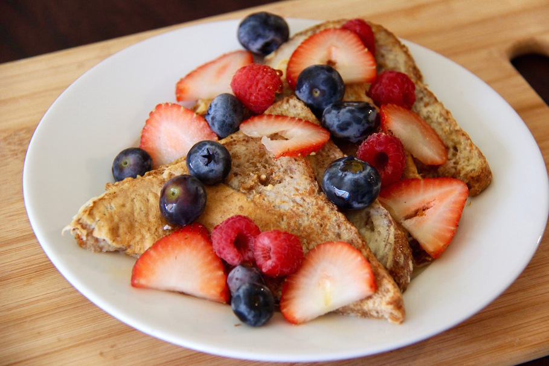

Anabolic French Toast
Protein-packed french toast
Prep time: 3 minutes. Cook time: 34 minutes
Servings: 5. Calories per serving: 295
Ingredients
- Sara Lee Delightful 45 bread(15 slices), or other low calorie multigrain bread
- 32 oz liquid egg whites
- Truvia(about 7 packets) or other sugar substitute
- 1/4 cup vanilla extract
- 3 tablespoons of cinnamon powder
- sugar-free syrup
- raspberries or your favorite fruit
Directions
- Pre-heat oven to 350 degrees.
- Ready large cookie sheet with parchment paper and pam.
- Combine egg white, sugar substitute, cinnamon and vanilla extract in large bowl and whisk until throughly blended.
- Soak bread slices in egg mixture until saturated.
- Place soaked bread on cookie sheet.
- Bake for 17 minutes then turn bread on other side and bake for another 17 minutes.
- Remove from oven and top with syrup and fruit